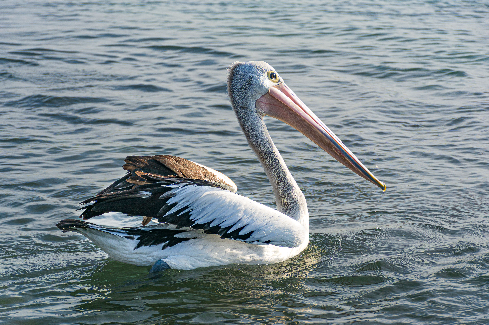

The Australian Pelican is a huge waterbird with an exceptionally long bill and an enormous throat pouch. It is widespread across Australia and can be found on freshwater lakes, rivers, estuaries, coastal waters and wetlands. Despite its size, it is an excellent glider and can use rising thermal air currents to travel long distances with relatively little effort. Australian Pelicans mainly eat fish but are opportunistic feeders and may take crustaceans, amphibians and other aquatic animals. They often feed cooperatively, working together to herd fish into shallow water. Their breeding colonies can become enormous when water and food conditions are favourable.